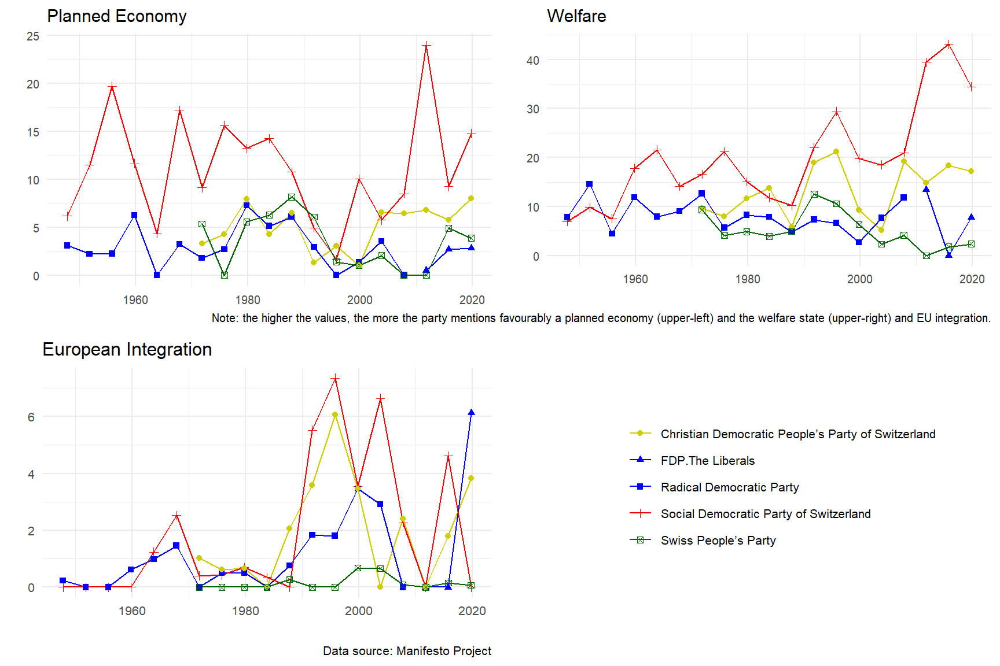

2.1 The traditional Swiss bourgeois and left blocs: historical perspectives
A striking feature of the history of Switzerland’s social blocs is the persistence and resilience of a liberal, and then of a liberal conservative bloc since the creation of modern Switzerland in 1848, a bloc that the existing literature on the topic generally calls the bourgeois bloc. Tracing the history of Switzerland’s social blocs is therefore essentially a matter of tracing that of the bourgeois bloc. However, we shall see that tracing this history calls into question the extent to which, from a neorealist perspective, this bourgeois bloc can truly be described as bourgeois.
The history of the Swiss bourgeois bloc goes back to the creation of modern Switzerland in the first half of the 19th century. It is during these crucial decades that Switzerland underwent important institutional change that laid the foundation of its federalist system, which still persists today. The Old Swiss Confederacy (1351-1798), was a loose and strongly decentralized confederation between small states which wanted to protect their independence vis-à-vis the Habsburg empire. The only centralized institution of the Confederation was the federal diet, which were assemblies of deputies from the cantons. After the Napoleonic invasion of 1798, the Swiss state underwent a first and important process of centralization, with the fall of the Old Swiss Confederacy and the establishment of the Helvetic Republic, a strongly unitary and centralized state inspired by the French system and imposed by Napoleon. The unpopularity of Helvetic Republic’s institutions led to the Mediation Act (1803-1815) and the Restauration (1815-1830), which marked a return to traditional structures. The Regeneration period (1830-1847) saw the growing political power of liberal forces constituted by large industrialists, craftsmen, self-employed farmers and professionals who took power in a majority of cantons. That period was characterized by a growing polarization between liberal and progressive groups in proto-industrialized and protestant cantons and those attached to the traditional models of the Catholic conservative cantons (Sciarini 2023, 21–25).
This religious cleavage between Radical Protestant modernizers and Catholic federalists, which was historically one of the most structuring conflicts in Switzerland, led to the Sonderbund civil war (1847) and the foundation of modern Switzerland in 1848. The federal institutions elaborated during and in the decades following the first Swiss constitution of 1848 can be interpreted as a social compromise between the losers of the Sonderbund civil war, the Catholic conservative coalition opposed to the centralization and modernization of the Swiss Confederation, and the victorious and dominant Radicals who were on average Protestants and bourgeois from urban areas (Sciarini 2023, 27–28). However, these two blocs were highly heterogeneous and subject to internal contradictions. It is particularly important to stress the heterogeneity of the Radical bloc, which contrasts with the its almost hegemonic domination over Swiss politics in the second half of the 20th century. For four decades (1848-1891), all seven seats of the federal council were held by Radicals despite growing contradictions within the bloc and an increasing opposition coming from the Catholic conservatives, who only gained their first government seat in 1891.
From the outset of their movement, the Radicals were gathered by an unitary illusion: the pretention to transcend cleavages running through Swiss society and unite all its elements thanks to an encompassing goal: the modernization and centralization of the Swiss state. Far from homogeneous, the Radical bloc was a kaleidoscopic mass-movement constituted by the working class through the Grütli Union1 and by an elite gathering entrepreneurs, bankers, journalists, lawyers and teachers, who were nonetheless divided over the role of the Swiss state.
The political and economic thought of the Radical movement can be difficult to grasp, as its members could substantially differ from one canton to another. Overall, this movement showed a clear intellectual affiliation to the liberal economic and political thought of the 18th and 19th centuries. James Fazy, one of Geneva’s leading 19th-century Radical politicians, was strongly influenced by the Physiocrates and Adam Smith. In 1821, the Genevan Radical published L’homme aux portions, an essay denouncing the French economic system as too rigid and containing too many barriers to free trade. This book was praised by Jean-Baptiste Say, who considered Fazy to be an intellectual who fully belonged to the liberal school of thought of his time (Mettral Dubois 2015, 55–56). The Radical movement of the canton of Vaud, founded and led by Henri Druey (1799-1855), was more influenced by the liberal philosophy of Hegel. The main legacy of Hegel’s thought on the radical movement was the need to create a centralized and unitary state, considered in Hegelian philosophy as the means by which liberty and the dialectical movement that drives history are realized (Meuwly 1992).
Parts of the Radicals, constituted by the Democrats, were partisans of a more centralized and interventionist state while another important branch, the liberal or “manchesterian” Radicals, were more federalist and in favor of laissez-faire. This divide between Democrats and Liberals was made explicit as early as 1852 over the issue of the nationalization of the Swiss railway industry. Supporters of a state-run railroad network, represented by for instance in Bern by Jakob Stämplfi2 (1820-1879) and Johann Jakob Speiser (1813-1856), were opposed by liberal Radicals such as Alfred Escher3 (1819-1882) in Zurich, who were industrialists and bankers close to the private railway companies, when they weren’t the owners themselves (Meuwly 2010).
Regarding the Catholic conservative bloc, the latter was from the start a cross-class coalition, constituted by, of course, the Catholic elite, but also by peasants, farmers, artisans and the commercial middle class from rural areas. These groups were united by Catholicism, but also by anti-modernism and federalism. This conservative coalition was the first to make extensive use of the constitutional and optional referendum (respectively 1848 and 1874) to disrupt the reforms promulgated by the Radicals. While the Radicals were convinced that the idea of the Swiss nation would transcend divisions and social conflict, the Catholic conservatives believed that religion, rather than the Swiss state, should endorse this role (Altermatt 1979).
As industrialization, proletarianization and unionization intensified in the late 19th, the hegemony of the Radical mosaic gradually shattered as the contradictions between the policy expectation of the popular and bourgeois bases increased. Parts of the democrats and of the working class joined or even founded socialist organizations. When the Swiss Socialist Party was founded in 1888, it was a former Radical, Albert Steck (1843-1899), who wrote the party’s first program, which provided for nationalizations and a transition to a planned and managed economy. Nevertheless, the former Radical Democrats reconverted into socialism such as Steck or Johan Jakob Treichler (1822-1906) were more influenced by anarchist and utopian socialist ideas than by Marxism. Steck explicitly rejected the notion of class struggle and the Marxian theory of value. Marxism made nonetheless its way into the Swiss Socialist Party in the early 1900s, as seen by the second program of 1904 written by Otto Lange (1863-1936), who rewrote the program along more orthodox Marxist lines. This second program marked a relative decline of the anarchists and cooperative ideas and the advent of Marxism in the Swiss Socialist Party, until the latter definitively abandoned Marxism in the post-war period (Meuwly 2010, 118–19).
The creation of the Swiss Socialist Party prompted the Radicals to set up their own party, which was created in 1894 under the name of the Radical-Democratic party (PRD). This marked the beginning of the Radical shift towards liberal stances, which became clear-cut after the general strike of 1912, after which “a long-denied class conflict became evident” (Meuwly 2010, 49). Conversely, industrialization and class conflict represented an opportunity for an extension of the social basis of the Catholic conservative bloc towards the working class. The global development of a Catholic social doctrine, beginning with the encyclical Rerum Novarum (1881), was integrated by the Swiss Catholic conservatives, who then tried to attract parts of the working class (Altermatt 1979). As a result, the Catholic conservatives did not try to incorporate working class’ interests only due to ideological change. As shown by Walter (2022), the development of a Catholic social doctrine was a reaction to the multiplication of Catholic workers’ associations resulting from rural-urban migration flows. In rural areas, existing business and farmers associations within the Catholic conservatives opposed the development of workers’ associations whereas in urban cities, Catholic workers did not meet such opposition and were thus free to develop their own Catholic organizations.
This polarization of social conflict around a left and right bloc became even more salient after the second general strike of 1918, which was the biggest strike and social protest in Swiss history. The latter was followed by the introduction of the proportional representation system: the Radicals lost their hegemony in the parliament and the Catholic conservatives, who meanwhile created the Christian Democratic Party (PDC) in 1912, and the Socialists became important political actors in the National Council. The Socialist Party (PS) consolidated a left bloc while the Radical-Democrats (PRD), the Christian democrats and the Agrarians formed an alliance against the left.
This coalition between the PRD, PDC and Agrarians and its close links with business associations such as the Swiss Union of Commerce and Industry, also called Vorort (created in 1870), led many scholars to name this dominant coalition the “bourgeois bloc” (Mach 2007). The dominance of this bourgeois bloc is considered to be a fundamental feature of the Swiss hybrid model, along with the constrained policy capacity of the state and the tradition of self-regulation by economic actors and associations (Trampusch and Mach 2011, 43).
Inspired by Regulation Theory and the neorealist approach, Charles and Vallet (2024) argue that the dominant social bloc underpinning the main key institutional forms and the economic success of late 19th century’s Switzerland was a “bourgeois-peasant” bloc gathering the major business interest associations: the Swiss Federation of Commerce and Industry (USAM, or Vorort) and the Swiss Farmers’ Union (USP). During the second half of the 19th century, especially during the Second Industrial Revolution, Switzerland’s socio-economic model became gradually a form of organized capitalism based on five key institutional forms: a bank-oriented industry; a nationalized monetary system and a strongly independent central bank; federalism and direct democracy favoring compromises; a state involved in active infrastructure building; and a trade policy centered around a “combative protectionism” strategy. On top of the institutional hierarchy, international insertion played a crucial role since access to international markets was a matter of survival for a large part of the export-oriented large Swiss industries represented at the political level by the Vorort. Traditional industries and the agricultural sector constituted the second half of this bourgeois-peasant bloc, and their political demands were met through various domestic compensation policies. According to Charles and Vallet (2024), the contradictory interests between the export-oriented and domestic-oriented industries were resolved by the need of Swiss capitalists to defend their interests against the state and foreign industries. This explanation is not entirely satisfactory, since, as David and Mach put it, the growing popular protests and opposition from the working class also play an important role in the unification of the bourgeois bloc: “The formation of a ‘bourgeois bloc’ at the end of the nineteenth century was dictated as much by the political institutions of conflict resolution as by the will to fight the rise of the labour movement” (David and Mach 2006, 9).
However, the extent to which this dominant bloc can truly be described as bourgeois or bourgeois-peasant must be questioned, in addition to the fact that there is no precise definition given in the literature. In the sense given in the latter (Meuwly 2008; Mach 2007; Trampusch and Mach 2011), the bourgeois bloc refers to a political coalition between the Radical democrats, the Christian democrats and the Agrarians (now UDC) and its close ties with business interest associations of both the export-oriented industries and domestic-oriented sheltered sectors. Although this term has the merit of underlying the heterogeneity of the DSB, the bourgeois-peasant bloc in the sense given by Charles and Vallet (2024) does not even explicitly include political actors, and restrict this definition to the interests defended by the major business interest associations. This bloc is hence bourgeois only because it gathers right-wing parties and business interest associations, a definition which is rather narrow and can be misleading since it does not take into account the social basis of the bloc. From a neorealist perspective, which seeks to identify the relevant dominant and dominated social blocs underpinning a given socio-economic model, a social bloc cannot be reduced to an alliance between political parties. More precisely, social blocs are “alliances between socio-political groups united around a defined political strategy” (Amable and Palombarini 2023, 3). These socio-political groups are sets of agents expressing similar social demands, or policy expectations. Contrary to what has been recently argued by May, Nölke, and Schedelik (2024), the neorealist conception of social blocs is thus not strictly “voter-based” since social blocs are aggregations of different socio-political groups which are not confined to voters.
In addition, calling this right-wing coalition bourgeois ignores, for instance, the fact that this bloc gathered some popular socio-economic groups such as small-business owners and peasants, or even parts of the Catholic working class. In the sense given by Amable and Palombarini (Amable and Palombarini 2018), the bourgeois bloc observed in France corresponds to the aggregation of the wealthiest and most educated groups of the traditional left and right blocs. I argue that, from a neorealist perspective, the Radical bloc of the 19th century and the right-wing coalition of the late 19th and of the 20th centuries cannot be described as bourgeois and that other terms such as “liberal conservative” or simply “right” bloc are more suited. From this perspective, socio-political groups having strong bourgeois traits are only a part of the DSB, and their institutional and ideological domination within the bloc (Amable and Palombarini 2023) depend on various socio-economic, ideological and historical dynamics. Another issue of the literature on the bourgeois bloc is the overemphasis on the role of business interest associations. It is true that the latter hold a privileged role in Swiss politics, due to the weakness of the Swiss central state and the importance of pre-parliamentary phase in public decision-making (Sciarini 2023). However, social groups have other means to influence policy making other than through business associations or trade unions, such as party politics, public protests or referendums. This concept of a bourgeois bloc reflecting the all-powerful power of business interests associations is also mirrored by an abundant and important literature on the structural power of Swiss elites. According to studies from the sociology of elites’ perspective, the Swiss bourgeois bloc is synonym with the political and organizational power of the Swiss elite networks which are considered as the sole social basis supporting the Swiss model of coordinated or organized capitalism. From this perspective, Switzerland is considered to be ruled by a “close-knit elite that simultaneously embraces political, economic and military positions” (Bühlmann, David, and Mach 2012, 727). Rossier et al. (2022) describe the transformations of the Swiss elites in three periods. The first period (late 19th to 1945) corresponds to a consolidation period during which Swiss elites, due to the small size of the country, organized themselves through organizational networks and compromises between interest groups and political parties. The second phase (1945-1990) corresponds to an integration stage. After unions and farmers’ associations were integrated into the elite networks during the 1930s, the second stage marked the culmination of elites’ coordination and cohesiveness. In the latest stage (from 1990s onwards), a fragmentation dynamic destabilized the traditional mode of coordination of the national elite, due to increasing internationalization and globalization. Although the contributions of the Swiss sociology of elites’ perspective are crucial to understand the dynamics of an important branch of Swiss social groups, this “oligarchic” approach to the Swiss social blocs implicitly considers the rest of the Swiss population as a politically dominated group passively accepting the institutional change and the socio-economic model promulgated by the elites. In other words, both the bourgeois bloc and oligarchic perspectives omit the importance for the Swiss socio-economic model to be supported by a social bloc composed of different socio-political groups united around a political strategy. The narrow conception of a Swiss DSB which would be limited to a political alliance between political parties and business associations must hence leave room to a more accurate investigation starting from the identification of the different Swiss socio-economic and socio-political groups, and the different political strategies which sought to aggregate the relevant socio-political groups into social blocs.
Such an analysis, especially regarding the identification of Swiss socio-political groups, may prove delicate for 19th and 20th century Switzerland, due to the lack of good-quality individual survey data, which only began to be collected systematically and consistently from the 1990s onwards. Until the post-war period, the evolution of the Swiss social blocs could nonetheless be resumed as follows, based on short reconstruction of the Swiss social blocs eschewed above. From the middle to the late 19th century, the Radicals formed a dominant social bloc, which was strongly heterogeneous in terms of the socio-political and socio-economic groups gathered by its political strategy centered around the construction of a central state. This dominant social bloc was composed by the working class (mainly through the Grütli Union), and an urban elite composed by the most educated (journalists, lawyers, teachers) and the wealthy industrial bourgeoisie (entrepreneurs, bankers, industrialists). This DSB was united by their willingness to modernize the Confederation against the Catholic conservatives. A second period, from the late 19th to the second World War, marked the recomposition of the DSB and its transformation into a liberal conservative bloc. Parts of the working class and of the democrats (educated elite) joined the emerging socialist-left bloc while the Christian democrats attracted part of the working class while being progressively incorporated into the DSB, along with the Agrarian party which represented the peasant and farmer classes.
Analyses of the first Swiss post-electoral surveys which were conducted in the 1970s show the heterogeneity of the Swiss “bourgeois bloc” and that the term bourgeois is not valid for the right bloc as a whole. The social basis of the Radical-Democratic party was constituted by large employers/liberal professions and managers. The UDC relied heavily on small business owners’ support while the PDC’s social basis was rather cross-class (L. Rennwald 2014; Tawfik 2019). Therefore, of the three right-wing government parties, only the Radical-Democratic party’s social basis can truly be described as bourgeois. Regarding the support for the Socialist party, the latter was neither a bourgeois nor solely a popular party, but a hybrid-class party whose social basis was constituted by socio-cultural professionals and the working class (L. Rennwald 2020).
The coalition between the Radical democrats, Christian democrats and Agrarians against the left bloc took deeply roots into the Swiss socio-political system: it persisted during the post-war period and still shapes Swiss politics to some extent nowadays (Mazzoleni and Meuwly 2013; Meuwly 2008, 2010). A striking feature of the Swiss DSB is its persistence and resilience since 1848: even though this bloc underwent important transformations, especially after the introduction of the proportional system in 1918, it was always mediated by right-wing parties, first the Radicals and then an extended coalition with the Catholic conservatives and the Agrarians. Despite its incorporation in the parliament and government, the left bloc never truly became dominant in Switzerland.
To sum up, Switzerland’s traditional social blocs crystallized into an asymmetrical opposition between two blocs, which is summarized in Table 2.1. On the one hand, the dominant social bloc, which can be called liberal conservative, gathered the large employers and owners of the big industrialized and internationalized firms, medium and small business owners and farmers, and skilled workers from the private sector. At the political level, this socio-political group was represented by business interest associations such as the Vorort (now EconomieSuisse), and the Radical-Democratic Party. The program of the Radical-Democratic Party and policy demands from the business interests associations linked to the large industrialized firms and large employees correspond to the interests of large export-oriented industries: low social protection, low taxation, no barriers to external trade and promoting free trade through bilateral agreements.
Alongside this group were the medium and small business owners producing essentially for the national market, and skilled workers (managers) from the private sector. The policy demands from the medium and small domestic-oriented firms differed substantially from those of the large companies in terms of the degree of protection from international competition and public subsidies. Unlike the big corporations producing for foreign markets, small and medium firms felt more threatened by external competition, and, since they produced mainly for the internal and rather small Swiss market, they tended to ask for protection and public subsidies. On the political level, the agricultural sector was represented by the Farmers’ Union (USP, created in 1897), while the Union of Arts and Crafts (USAM, created in 1879) defended the interests of small and medium domestic-oriented firms. These contradicting demands between the export-oriented and sheltered domestic-oriented sectors are one of the main factor behind the destabilization of the DSB in the 90s.
On the other hand, the main social bloc excluded from the DSB was the left bloc, constituted by socio-cultural professionals, workers from the public sector, and production workers from the private sector. These groups were mediated by the Swiss Socialist Party, which was incorporated into the government during the post-war period, but never really managed to dominate the parliament and government. Other organizations, such as the Swiss Federation of Trade Unions (USS, founded in 1880) also play a great role in the representation of workers’ interests.
In its early days, the Swiss Socialist Party had strong communist stances. Its second program (1904) had strong Marxist and anti-capitalist inspirations: it advocated nationalizations, collectivization, and economic planning as ways out of capitalism. In the post-war period, the party moderated its program and became more a social-democratic reformist party. The main policy demands of the revised program of 1959 were focused on social reforms and expansionary policies within the capitalist framework: extending social protection; promote economic growth and anti-cyclical Keynesian macroeconomic policies and ensure full employment (Degen 2022).
The traditional Swiss social blocs have thus been identified and their evolution since the 19th century until the second half of the 20th century has been shortly traced. Before moving on to an in-depth analysis of the recomposition of these social blocs during the crisis of the 90s, it is necessary to take a long-run perspective on the evolution of these blocs in the last decades.
2.2 Swiss social blocs and socio-economic factors: 1980-2016
How have the social bases of the liberal conservative and left blocs evolved since the 70s? How are the support for the main Swiss social blocs influenced by socio-economic characteristics? The objective of this section is to explore the composition of the Swiss social blocs in terms of socio-economic characteristics and assess their evolution in the last decades. This approach respresents also an opportunity to contribute to a flourishing literature on the links betweem political divides and structural factors.
In fact, a recent trend in political economy developed a tremendous analysis of the long run transformations of political cleavages, social blocs, and voting outcomes in almost all democratic countries around the world. The popularity of inequality studies, after the contributions of renown economists such as Atkinson (2015), Milanovic (2016) and of course Piketty (2014), economists recently became interested in the problematic of social conflict and political cleavages. One possible explanation of this sudden interest is the inequality paradox: increasing inequality and neoliberal reforms did not pave the way for growing support for redistribution, taxation of top income and wealth owners, or for left parties. The same paradox could be applied to a “climate change paradox”, that is, the fact that the growing emergency or environmental issues were not followed by increasing support for green parties. For instance, the Swiss federal election of 2023 marked the end of the “green wave” and a sharp decline of Swiss green parties.
Those paradox thus gave way to a recent literature linking political cleavages and voting outcomes as function of a set of socio-economic factors, mainly income and education levels. Trying to explore this inequality paradox, Piketty (2018) underlines the fact that, rather than bringing back class-based divide back to its post-war salience, the global rise in inequality since the 1970s was followed by the emergence of a new cleavage and a multi-elite party system. During the post-war period, the electoral support for the left parties in The US, UK and France was mainly constituted by popular classes with low income and education levels whereas right-wing parties were supported by high income and education voters. The popular element of the support for the left then transformed in the 1970-80s: left parties became the bloc of the highly educated, thus becoming the brahmin left, whereas the right kept the support of the wealthy (merchant right) (Piketty 2018, 2019). A further project, which gave birth to the World Political Cleavage and Inequality Database (WPID), showed that these transformations affected almost all Western democracies (Armory Gethin, Martinez-Toledano, and Piketty 2021).
Underlying the rise of a new cleavage in the 70s and 80s, Piketty and the WPID tackle a topic which is in fact well-known in political science: the emergence of a cleavage centered around cultural values, that Piketty calls the “nativists-internationalists” divide, which cuts across the traditional class conflict and is the result of the increase in average education level and of globalization. This “cultural cleavage” has been given as many labels as it has analysts among political scientists.
Inglehart notably argued that strong economic growth and increase in standard-of-living experienced by advanced capitalist countries in the post-war period made the latter’s populations less likely to hold “materialist” values, as better living conditions shifted their preoccupations and values towards what the author famously called “post-materialism” (Inglehart 1971, 1990; Inglehart and Flanagan 1987). Kitschelt then claimed that “increasing affluence, greater educational accomplishments, changes in the sectoral composition of labor markets, and again the welfare state” (Kitschelt 1994, 21) influence citizens’ preferences on a new cleavage relatively independent from the economic (in Kitschelt’s terms “distributive”) divide: the “libertarian-authoritarian” cleavage. Preferences on this new cleavage, Kitschelt hold, are shaped by an interdependence between market and organizational experiences, or “job situations”. For instance, less skilled employees in “object-processing job situations” are more likely to hold authoritarian values whereas: “individuals in people-processing occupations with higher education tend to be more libertarian” (Kitschelt 1994, 25).
A certain branch of the literature on political cleavages suggested that this cultural divide is not new, and that political space has always been reducible to two dimensions. Rather, it is the meaning of the cultural divide which transforms over time (Kriesi et al. 2006). In fact, the idea of a cultural cleavage goes back at least to Lipset and Rokkan (1967)‘s seminal contribution on the origins of political divides in Western societies. Lipset and Rokkan (1967) notably argued that the national revolution (beginning with the French revolution) gave birth to two cleavages centered around cultural values: the conflict between the nation-state builders and the church, and the conflict between the promoters of the central state’s culture and the culture of the peripheral regions’ inhabitants. The industrial revolution, on the other hand, gave birth to two economic cleavages: a class conflict between capitalists and workers, and another class conflict between the urban and rural elites (or between the primary and secondary sector). The cultural divide therefore originally took the form of a religious conflict, which could totally or partially coincide with a center-periphery cleavage (Lipset and Rokkan 1967).
Kriesi et al. (2008) have emphasized the impact of globalization on the transformation of political cleavages. The threefold aspects of globalization, increasing international competition between economic actors; increasing migration; and integration to supra-national organizations, led to the emergence of a “integration-demarcation” divide between the “winners” of globalization, who are likely to include “entrepreneurs and qualified employees in sectors open to international competition, as well as all cosmopolitan citizens” and the “losers” of globalization which include “entrepreneurs and qualified employees in traditionally protected sectors, all unqualified employees, and citizens who strongly identify themselves with their national community” (Kriesi et al. 2008, 8). Exploring the socio-economic determinants behind this globalization divide, Teney, Lacewell, and Wilde (2014) showed that opponents of globalization are more likely to be unemployed, less educated and more attached to national identity. Other scholars have labelled this cleavage the “transnational cleavage” (Hooghe and Marks 2018) or the “universalism-particularism” cleavage (Bornschier 2010; Zollinger 2022).
Going back to Piketty’s framework, the combination of this new cultural cleavage with the traditional class-based conflict draws a bi-dimensional political space in which four social blocs are possible: the brahmin left, also called the internationalist-egalitarian bloc which is on the left both culturally and economically; an internationalist-inegalitarian bloc (merchant right) on the left culturally but economically on the right; a nativist-inegalitarian bloc on the right culturally and economically; and a nativist-egalitarian bloc which is culturally conservative but economically on the left (Piketty 2018, 2019).
Testing the relevance of the brahmin left vs merchant right divide, Amable and Darcillon (2022b) offer different perspectives over the possible coalitions resulting from this bi-dimensional political divide. On the one hand, preference for redistribution decreases with both education and income levels. On the other hand, support for globalization issues (such as immigration) is not only positively influenced by education level, but also positively associated with income. Amable and Darcillon (2022b) suggest the possibility of a rapprochement between the brahmin left and the merchant right over policy preferences, giving birth to a bourgeois bloc uniting the wealthiest and most educated groups from the left and the right. Amable and Darcillon (2022a) show that the brahmin left vs merchant right divide has not taken place in every country and that the classical popular left versus bourgeois right opposition is still relevant for many countries.
In this context of multi-elite party system and multidimensional political divides, Switzerland is an interesting case study. A widespread idea claims that the economic cleavage always played a relatively minor role in Switzerland. In Switzerland, class conflict was always cut across a wide variety of other divides, the most important one being the religious cleavage (Lijphart 1979). Moreover, due to strong standard-of-living increase throughout the 20th century, Switzerland is also often considered as a forerunner in the emergence of this “cultural” cleavage, and in the precociousness and strength of the educational shift. Following Inglehart Silent Revolution’s argument and empirical estimations, Switzerland shows relatively high level of post-materialism due to its high level of economic development (Inglehart 2009).
As a team part of the WPID project puts it, Switzerland is the country where “the shift of the higher educated towards the left has been the most dramatic” (Durrer de la Sota, Gethin, and Martinez-Toledano 2021, 4). During the post-war period until the 1990s, the left bloc (mainly the PS) was supported by low income and education voters while right-wing parties showed different patterns of class support, which again call into question the extent to which this bourgeois bloc can truly be characterized as “bourgeois”. Of the three parties constituting the bourgeois bloc, only one of them, the PRD-PLR party, had clearly a bourgeois composition since it is consistently supported by the most wealthy and educated groups since the post-war period. The PDC and the UDC cannot really be described as bourgeois since, according to Durrer de la Sota, Gethin, and Martinez-Toledano (2021), the support for the two parties was negatively associated with income and education. While this negative association tends to decline for the PDC, it became even more strong for the UDC since the 90s. After that period, the left bloc became brahmin in the sense that it gathered strong support among the most educated classes, while its popular support moved either into abstention or to the UDC.
This article by Durrer de la Sota, Gethin, and Martinez-Toledano (2021), shows that Piketty’s brahmin left vs merchant right divide is partially valid in Switzerland: a Swiss brahmin left indeed exists through the Swiss Socialist Party. However this bloc do not face a merchant right, but rather a bourgeois bloc gathered by the Radical-Liberals and a popular bloc which support the UDC or do not support any party. Rather than being constituted by a brahmin left, a merchant right and a nativist bloc, Switzerland’s tripolar political space is rather divided between a bourgeois bloc, a brahmin left and a popular bloc.
The transformation of party systems into a mutli-elite and tripolar political space came with important change in the structural basis of party support. Before that, scholarly debates emphasized the decline of class voting, measured through the Alford index, and the reconsideration of social class as a useful concept (Clark and Lipset 1991). However, the rise of the radical right during the 90s and the proletarianization of its electoral basis weakened the end of class voting argument and scholars soon became interested in explaining why workers became part of the radical right’s social basis. Oesch (2008a) argued that economic motivations play a lesser role than cultural determinants in explaining the success of the radical right: the latter’s supporters being more likely to feel threatened by immigrant’s impact on their country’s culture rather than on their standard-of-living. Against the argument of the decline of class voting, Oesch (2008b) suggested that position on a new class structure, measured by his own class schema (Oesch 2006), influence individual’s preferences on both the cultural and economic cleavages and thus class voting, defined as systematic links between social class and party support.
Empirically, Oesch (2008b) observed that, in the late 90s, the Swiss far right draw strong support from production and service workers and from small business owners while the center-right gathered support from large employers, small business owners and managers; and the left’s only above-average support was constituted by socio-cultural specialists. Trying to find the causality behind these new class voting patterns, Oesch (2008b) and Oesch and Rennwald (2010) took and developed Kitschelt (1994)‘s argument. In Oesch’s class schema, class locations are divided vertically and horizontally: different class economic interests come from hierarchical employment relationships while class differences in cultural attitudes are the results of occupations’ “work-logics”. Thus, people employed in “technical” work-logic professions such as production workers (carpenters, asssemblers, mechanics…) are more likely to hold conservative values whereas service workers (nurses, waiters…) and socio-cultural specialists (teachers, journalists, social workers…) employed in interpersonal work-logic occupations are more likely to hold progressive-libertarian attitudes since they experience more social interactions and their occupation requires tolerance for cultural diversity (Oesch 2006; Oesch and Rennwald 2010).
This kind of argument relating progressive and conservative attitudes to different “work-logics”, explaining thus why, for instance, the working class supports the far-right despite their economic interests, is however overly deterministic and remains a purely theoretical argument with no empirical evidence. Another explanation deserving more attention and research relates to changes in the hierarchy of preferences: despite the fact that working classes are surely on average less racists than before, their support for the far-right could have increased because of a change in the hierarchy of their social expectations, placing demands of stricter immigration policies above their demands for left-wing economic policies due to a strong neoliberal hegemony excluding any type of left-wing economic reforms as legitimate, thus leaving workers’ conservative demands as the only acceptable ones in the eyes of the dominant ideology (Amable and Palombarini 2022, 108–9).
Whereas Oesch (2008b) and Oesch and Rennwald (2010) conducted cross-country analyses of panel and post-election survey data with a rather limited time frame, in more recent contributions, Oesch and Rennwald (2018) explore the structural determinants of the transformation of political space from a two-dimensional to a three-dimensional configuration since the rise of radical right parties in Western countries using seven rounds of the European Social Survey data (from 2002 to 2014). This study claims to find evidence that the left is strongly supported by socio-cultural professionals who are culturally libertarian and economically on the left whereas the center-right is supported by large employers and managers who are on the right economically but culturally progressive. The whole argument is that the exogenous rise of the radical right made the working class and small-business owners “contested strongholds” and thus caused the political space to become tripolar: the far-right, thanks to its culturally conservative stances, can compete with the left for working class support and with the center-right for small-business owners’ support. Small artisans and business owners are also divided between their support to the center-right and the far-right: their economic preferences make them closer to the center-right while their cultural preferences are closer to the far-right.
Before this shift took place, the traditional Swiss left bloc aggregated by the Swiss Socialist Party was a hybrid-class coalition gathering socio-cultural professionals (teachers, academics, journalists…) and production workers, but also from technicians, clerks and service workers (L. Rennwald 2020). This strong class heterogeneity of the Swiss left declined: an analysis of Swiss post-election surveys for 2003 and 2007 show that the Swiss left was deserted by production workers who directed their support for the Swiss People’s party due to cultural issues (Oesch and Rennwald 2010). Using European Social Survey data for 2011 and 2014, L. Rennwald (2020) show that socio-cultural professionals remain the only “party preserve” of the Swiss left.
The empirical agenda of the present study is to test the validity and relevance of the literature reviewed above. More specifically, how are socio-economic factor shaping the composition of each Swiss social blocs? The objective of the empirical analysis conducted here is to test the following hypotheses regarding party support (PS), political leaning (PL), and issue positions (IP), derived from the contributions of the WPID project (Piketty 2018, 2019; Durrer de la Sota, Gethin, and Martinez-Toledano 2021; Armory Gethin, Martinez-Toledano, and Piketty 2021; Amory Gethin, Martínez-Toledano, and Piketty 2022); Oesch and Rennwald (2018); and Amable and Darcillon (2022b, 2022a):
Brahmin left versus merchant right hypotheses
- BvsM1. The support for the left and left-wing parties should be negatively associated with education and income levels in the first time periods. The negative association with education should then decrease and become positive over time.
- BvsM2. The support for the right and right-wing parties should be positively associated with education and income in the first time periods and the positive association with education should decrease over time.
Bourgeois bloc hypotheses
- BB1. The support for redistribution and state intervention should decrease with education and income. Support for equal rights between Swiss citizen and foreigners should increase with education and income.
- BB2. Support for right-wing parties and the right should increase with both income and education levels.
2.2.1 Data and empirical strategy
To test the hypotheses above, two types of data sources are especially relevant. The Swiss Election Studies (SELECTS) cumulative dataset is a harmonized dataset merging every Swiss post-election (federal assembly elections, which take place every four years) surveys from 1971 to 2019 (Tresch and Lutz 2022). Since SELECTS data are already drastically analyzed in the literature (for instance by Durrer de la Sota, Gethin, and Martinez-Toledano (2021)), I contribute to the existing research by analyzing another data source, the VoxIt cumulative dataset which harmonizes every post-vote surveys from 1981 to 2016 (Brunner, Kriesi, and Lorétan 2017).
In each poll, respondents were asked which party they supported and their self-placement on the left-right axis on a Likert 10 points scale. The main dependent variables are dummy variables for party identification and political leaning computed from these two variables. Three other variables regarding issue position on public policies such as redistribution, state intervention and equal rights between Swiss citizen and foreigners are also considered.
The main independent variables are education and income levels. The variable “educ” is a qualitative variables on the highest achieved educational level with 6 categories ranging from primary school to university. It is important here to underline the peculiarities of the Swiss education system. Switzerland’s education system is strongly based on vocational training. As a result, other education categories tend to be missing for a lot of year-periods of the dataset. To solve this problem, but also to simplify the data structure, years are aggregated into several time periods to avoid separation issues.
Figure 2.1 shows the proportions of each level of education and their evolution over time. In the 1980s, most of Swiss respondents completed either vocational training or compulsory school. The share of compulsory schooling declined over time, reflecting the overall increase in average education, as seen also by the increase in the share of university graduates. The share of vocational training declined over time, but remains the most widespread education level in Switzerland. For the regression analysis, the categories “university” and “higher specialized school” are merged together since the absence of the latter in the first two time periods could cause estimation issues. This does not pose a major issue since higher specialized schooling is rather similar to university in Switzerland.
Regarding income levels, the dataset contains two variables. The variable “nivmena” represents the houshold’s standard of living in four categories (high, middle-high, middle-low, low) available from 1981 to 1991 whereas “revenu” is an income bracket variable in five categories available from 1992 to 2016. To harmonize these two variables in order to construct one single income or standard of living variable, I recode the variable “revenu” in order to make it similar to “nivmena” by grouping the income brackets categories 3 (from 5’001 chf to 7’000 chf) and 4 (from 7’001 to 9’000) into the “middle-high” category. This harmonized variable is used only in regressions for party support because political leaning and issue position variables are not available until 1992 (thus for these dependent variables the variable “revenu” is used as an independent variable for income).
A series of binary logit regressions for party support, political leaning, opinion on redistribution, state intervention and equal rights between Swiss and foreigners are conducted. The results presented in this section come from the following model:
\[ P(y_{it} = 1) = logit^{-1}(\alpha + \beta_{I}I_{it} + \beta_{E}E_{it} + \beta I_{it}E_{it} + \gamma X_{it} + \eta_{1} Year + \eta_{2}YearI_{it}+ \eta_{3}YearE_{it}) \tag{2.1}\]
With \(I_{it}\) and \(E_{it}\) the income and education level of individual \(i\) in period \(t\) and \(X\) a vector of socio-demographic characteristics control variables which were available in the dataset for all time periods. The controls are for age (grouped into 4 categories), gender, religion, linguistic region (French, German or Italian), marital status and house ownership. \(Year\) are dummy variables for time periods. The models include interaction terms between education and income as well as between income, education and time period in order to assess the temporal evolution of the correlation between the dependent and main explanatory variables. Income and education are treated as categorical variables, with vocational training and low income as reference categories. The results are presented in the form of average marginal contrasts which allow to compare the difference in average predicted probabilities between groups of interests, in our case, between highest and lowest income groups and between university graduates and vocational training graduates4.
Before running the model presented above (Equation 2.1), simple linear models regressing the dependent variables on time periods were estimated as a descriptive way to evaluate the proportions’ overall time trends in the sample (except for party support, for which general descriptive statistics were computed). The results for party support (Figure 4.1) show that Swiss citizen are most likely to not support any party, even though the proportion of no party support has declined over time. Among political parties, the Swiss Socialist Party has the highest proportions of support, whereas The Radical-Democrats rank second until 2001, when the UDC becomes the second largest party in the sample. Out of all government parties, only the UDC has seen its share rise while the support for all other government parties tend to decline. The discrepancy between estimated proportions for party support and actual party strength during the national elections suggests that UDC’s support is strongly underestimated in the sample (see Figure 2.6 and Figure 4.1 in the appendix).
Regarding political leaning, identification with neither the left nor the right increased until 2000 (50%) and then gradually declines 2016 (at around 30%). Left leaning slightly increased over time while right leaning declined until 2000, and then increased until recovering in 2016 about the same percentage (slightly below 35%) as in 1988. As for issue positions, the percentage of Swiss citizen supporting income redistribution remains rather stable above 50%. The proportion regarding support for equal rights and chances for foreigners has overall increased above 50% since 1993, even though it fell below 50% from 2010 to 2014. Interestingly, the proportion for state intervention’s support has increased rather significantly since the 90s, but remains below 40% (see Figure 4.2 and Figure 4.3 in the appendix).

Figure 2.3 shows average marginal contrasts for each party or no party support in each time periods. The results partially confirm those of Durrer de la Sota, Gethin, and Martinez-Toledano (2021) and hypotheses BvsM1 and BvsM2. First, the Swiss Socialist Party (PS) used to be supported by relatively low education and income groups in the 1980s and became indeed a brahmin left party over time: the difference between the highly educated and vocational training graduates became positive in the second half of the 1980s and continued to increase in almost all time periods while the negative difference between the highest and lowest income groups decreased, indicating that the party’s social basis became more educated and wealthier over time. However, the results show that the educational shift took place already in the 80s: university graduates already supported more the PS compared to vocational training graduates. This is an important result because it indicates that the PS became the party of the most educated in the 80s, before the economic and political crisis of the 90s and, most importantly, before the vote on the adhesion to the European Economic Area (EEA) in 1992, events which are often associated with the final stage of the educational shift and the PS’s loss of popular support. Furthermore, it not clear whether the relationship between education and support for the Swiss Socialist Party was negative in the first half of the 80s, since the difference in average predicted probabilities is not significant for this time-period. Other regressions models that were considered by the author, mainly multilevel models using years and cantons as levels, rather show that this relationship for all the time frame of the dataset, suggesting that the Swiss Socialist Party was already a brahmin left party since the beginning of the 80s (see Figure 4.4 in the appendix).
Second, the Liberal-Radical Party (Radical-Democratic and Swiss Liberal Party before the latter merged in 2008) (PRD-PLR) shows a clear bourgeois basis for almost all time periods. The PRD-PLR Party is thus indeed the party of the wealthiest and most educated groups and is the only party that shows this pattern. However, the PRD-PLR seems to gradually become a merchant right party in the last time periods. In Durrer de la Sota, Gethin, and Martinez-Toledano (2021), Greens’ supporters also became bourgeois between 2011-2019, with the difference between the top 10% income and bottom 90% income voting Green becoming positive during this period while the difference between the top 10% and bottom 90% educated was positive since the 80s. The results shown in Figure 2.3 rather indicate that the Greens were a brahmin left party from 1981 to 2016.
Third, the results show that the Swiss People’s Party (UDC) was a merchant right party whose social basis became popular both in terms of education and income levels. Before the 90s the party gathered the less educated, but also the wealthiest income groups (hence “merchant” in Piketty’s terminology). Here the results contrast with those of Durrer de la Sota, Gethin, and Martinez-Toledano (2021) which show that the UDC was already a popular party gathering the less educated and poorest income groups in the 70s. Finally, we can see that popular groups, both in terms of education and income levels, are likely to not support any party relatively to the most wealthy and educated.
Figure 2.4 shows average marginal contrasts for left leaning, right leaning and no leaning. Interestingly, we can see that right leaning used to be bourgeois in the 80s and 90s while left leaning used to be brahmin. Over time, left leaning became bourgeois and right leaning became merchant. In the 80s and 90s, left leaning was positively associated with education, but not with income level while right leaning was positively associated with both. The positive difference between university and vocational training graduates declined for right leaning whereas it stayed rather stable for left leaning, indicating that the most educated support the left for all time periods while their support for the right declined over time. Popular groups tend to not identify with either the left or the right.

Finally, Figure 2.5 shows average marginal contrasts for issue positions regarding equal rights between foreigner and Swiss citizen, redistribution and state intervention. The support for equal rights is positively associated with both education and income levels. However, the positive difference between highest and lowest income groups tends to decrease since the 2000s, indicating a decline of the “progressive attitude” of the wealthiest income groups towards foreigners. The difference between income groups in the support for redistribution is negative for all time periods whereas the difference between education groups was declining from 1992 to 2008, but tends to increase since in 2008-2012, but is not significant in 2012-2016. Regarding support for state intervention, the differences between education groups and income groups are respectively positive and negative: university graduates tend to be relatively more in favor of state intervention and the highest income groups tend to be relatively against for all time periods, indicating a brahmin left vs merchant right divide over state intervention.
To sum up, the results overall confirm the brahmin left vs merchant right hypotheses, even more than the results of the WPID project. The support for the Swiss Socialist Party evolved from a traditional popular support towards a brahmin left support in the 80s. The results confirm the bourgeois composition of the PLR-PRD, but the latter seems to be gradually transforming into a merchant right composition since the beginning of the 2010s. The Greens’ supporters belong to the brahmin left since the 80s and there is no clear trend that the party evolved into a bourgeois party. Regarding the UDC, the latter used to be a merchant right party in the 80s, and evolved into a “populist” or, in Piketty’s terms, a “nativist” party in the 90s. Thus, unlike Durrer de la Sota, Gethin, and Martinez-Toledano (2021) and the classification presented in Table 2.1, the social basis of the PLR seems to be transforming into a merchant right, while the Greens have kept their brahmin elements.
However, if one looks at political leaning on a left-right axis instead of party support, self-identification to the right used to be rather bourgeois in the 90s, and then went merchant afterwards. Self-identification to the left used to be brahmin in the 90s and even became bourgeois in recent time periods, if one looks at the difference in predicted probabilities between the upper-middle income and lowest income groups.
Finally, regarding policy preferences, preferences for equal opportunities and rights between foreigners and Swiss citizen for the highest incomes and the most educated seemed to converge until the mid-2000s, and have been diverging ever since. The divide over state intervention shows a brahmin vs merchant opposition in all time periods, with the highest income group being in favor of free market (relatively to the lowest income group) and university graduates being relatively more in favor of state intervention (relatively to vocational training graduates). The divide over income redistribution is less clear-cut than the state vs market divide: the cleavage appears to be brahmin vs merchant for some time periods (mostly 1992-1996 and 2008-20012), solely negatively correlated with income (1996-2004) or show a bourgeois vs anti-bourgeois opposition (2004-2008), with both the most education and wealthy being relatively opposed to redistribution.
Overall, the regression analysis conducted in this section, using a different data source from the WPID project offers a new way to describe the evolution of the Swiss version of the brahmin left vs merchant right divide, which is summarized in Table 2.3. However, this analysis suffers from several limitations.
On the one hand, one possible methodological issue of VoxIt dataset is the clustering structure of the data. Swiss citizen are clustered into several geographical levels, the most important ones being the cantonal and communal (district) levels. Switzerland is a highly decentralized and federalist country: every day political life as well as economic and political institutions can be substantially different across cantons. Each canton has its own party system and some political parties, such as the Lega Ticinessi or Mouvement Citoyen Genevois (Geneva Citizen Movement) exist only at the cantonal level. A possible methodological solution, which would take into account both the time periods and the cantons as levels in which data are clustered, was considered by the author: a series of multilevel regressions. However, the results from these multilevel regressions showed that the variations between canton were negligible and thus a more simple model, the one presented in this section, was chosen. Moreover, the results between the multilevel model and the model of this section give overall similar results.
On the other hand, the perspective adopted in this section is essentially a top-down approach, in which social blocs are derived from the relationships between party support, political leaning or policy preferences taken as dependent variables to be explained by a set of socio-economic characteristics. This is the method which is the most widespread in the literature, but it suffers from having an oversimplified view of social conflict, which is almost always reduced to two dimensions (the so-called cultural and economic divides). One important contribution of the neorealist approach is to underline the fact that social conflict is multidimensional (Amable and Palombarini 2023) and that a bottom-up approach, which defines socio-political groups endogenously from a set of policy preferences, can be more suited to analyze the formation of social blocs. The next section will therefore adopt this bottom-up approach which is specific to the neorealist approach by conducting a latent class analysis for the late 90s.
2.3 In search of the liberal conservative and left blocs
The objective of the present section is to assess empirically the reconfiguration of the Swiss social blocs during the 90s. More specifically, the goal is to analyze how the dominant Swiss social bloc was able to recompose during the crisis of the 90s using a bottom-up approach different from the previous section, and more aligned with the neorealist approach. One of the main limitations of the regression analysis of the previous section was to consider social groups as pre-defined based on different income and educational levels, or occupation, and only two cleavage dimensions.
As explained in the introduction, the neorealist approach starts from the diversity of social expectations emanating from the heterogeneity of the social structure. Socio-political groups could be endogenously defined based on the proximity of Swiss citizen’s preferences regarding economic and public policies. A method that allow such procedure is latent class analysis (LCA). LCA is rarely used in social sciences, but has recently been applied as part of the neorealist approach to infer socio-political groups based on a set of policy preferences variables from post-electoral surveys. It was first used by Amable, Guillaud, and Palombarini (2012) to identify socio-political groups in France and Italy. The analysis resulted in the identification of twelve groups for France, and seven for Italy. The analysis of France’s socio-political groups and social blocs was then improved in a subsequent paper by Amable (2021).
This section has for ambition to extend the contribution of Amable, Guillaud, and Palombarini (2012) and Amable (2021) to Switzerland by conducting LCA analysis using Swiss election studies data. The methodology and approach used here closely follow the approach taken in Amable (2021).
2.3.1 The latent class model and estimation method
LCA allows to find a categorical structure from a set of categorical variables. The idea is that the Swiss population can be divided into different subgroups (socio-political groups given our theoretical framework), but that the latter are unobserved and can be indirectly estimated through a set of questions regarding policy preferences. The method employed here takes the following form:
\[f(y_i) = \sum^K_{x = 1} P(x) \prod^T_{t=1} P(y_{it} | x) \tag{2.2}\]
With \(f(y_i)\) the probability density function corresponding to a particular response pattern \(y_i\). \(y_{it}\) is the response pattern of individual \(i\) to a set of \(T\) survey questions taken as indicators in the model. \(P(X)\) is the probability to belong to a certain cluster given by the latent discrete variable \(x\), with \(1\le x \le K\). The association between the latent class variable and the indicators \(T\) is estimated through binary logistic regressions (if the indicators are dichotomous) or, in our case, through multinomial logistic regressions (if the indicators have more than two un-ordered categories) (Jeroen K. Vermunt and Magidson 2016).
An important step of LCA is model selection, that is, choosing the model with the appropriate number of clusters. The criteria chosen to determine the number of clusters in this section is a bootstrap likelihood ratio test, a test which, according to the simulation tests performed by Nylund, Asparouhov, and Muthén (2007), is the most suited compared model selection based on information criteria (AIC, BIC…). A series of models were thus estimated, increasing the number of clusters with each new model until the bootstrap likelihood ratio test showed no significance of adding a supplementary cluster to the model5.
2.3.2 Estimation of Swiss socio-political groups in 1999: the 12 clusters model
For the LCA estimation, the Swiss post-electoral study of 1999 (Hardmeier et al. 2022) is chosen. The reasons behind this choice are technical, but first and foremost historical since the 90s represent a turning point in Swiss history and the evolution of the Swiss social blocs.
2.3.2.2 Choice of the active indicator variables
Regarding the choice of the variables that will define the different Swiss socio-political groups in the 90s, the Swiss post-electoral study of 1999 (Hardmeier et al. 2022) has the advantage of having enough observation (3258 records) and containing issue position variables with good enough qualities to infer socio-political groups quiet fairly. The ideal data set would be the one containing issue position variables which cover a good range of institutional areas, such as the one considered in Amable (2003): products market, social protection, labour market, the financial system and the education system along with general policy orientations (Amable 2021). Although the Swiss post-electoral study of 1999 is the most relevant for the present research, it is still limited by the questions available.
Nine questions were considered relevant to be taken as indicators. Of the nine questions, three concern economic policy. One question asked the respondent whether they were in favor of increasing or reducing social spending by the confederation, the second one whether taxes on high income should be increased or decreased, and the third one whether the respondent was in favor of more state intervention of for free market. Overall, 66,7% of the sample supported an increase in taxes on high income while 39,4% supported an increase in social spending by the federal state (with 31,8% in favor of cutting expenditures, see Figure 4.7 in the appendix to see descriptive statistics of all the indicator variables).
One interesting question is about the role of the Swiss army. The question asked the respondents whether they preferred a strong army or no army at all. This question is relevant regarding the historical context since the 90s represented a turbulent period for the Swiss army. Switzerland is known for its militia-based army and remains one of the few Western countries to retain this system. Moreover, anti-army activists are an emblematic example of the New Left activists who emerged in the 80s within the Swiss Left. In 1986, the Group for a Switzerland without an army launched a popular initiative called For a Switzerland Without an Army and an Overall Peaceful Political Stance which, three years later, unexpectedly gathered 35.5% positive votes with a majority of yes in two cantons: Jura (55.5%) and Geneva (50.4%). These stunning results (no one would have expected such a high share of yes) greatly disturbed the government and the Swiss army, and the latter underwent a process of important reforms thereafter. Despite the rejection of this initiative, the debate over the role and the future of the Swiss army was still very heated in the late 90s and still frequently comes up in public debates nowadays8. Descriptive statistics suggest that the share of no army supporters remained rather stable since the ballot, with 35% of the sample being in favor of a Switzerland without an army (with 45% being in favor of a strong army, see Figure 4.7 in the appendix).
Another question is about European integration. In surely one of the most important and disputed referendum in Swiss history, Swiss citizen rejected their country’s adhesion to the European Economic Area in 1992 by a very short majority of 50,3% (the majority between cantons was far less close, with only 6 cantons in favor out of 26, the referendum requiring the double majority of the voters and the cantons to be accepted). As in other European countries, European integration became an important cleavage which destabilized both the liberal conservative and left blocs. In the former, the UDC was the only major party to oppose the adhesion, while, in the latter, the Swiss Socialist Party and labor unions were strongly in favor, with the exception of the Greens, which then quickly adopted a pro-EU position. This party was however divided over this issue, with a cleavage between the German-speaking cantons which strongly opposed the adhesion while the French-speaking cantons were in favor. The attitude towards European integration was included to assess the extent to which Switzerland displays a similar pattern than France in terms of European integration cleavage and the break-up of the traditional social blocs.
European integration revived a strong regional-linguistic cleavage. Romandy’s voters supported the adhesion with a large majority (75%) whereas the Swiss-German and Swiss-Italian citizen voted against (respectively 56% and 61.5% of negative votes). Within each region and canton, a urban-rural cleavage also divided the supporters of the adhesion to the EEC, who were mainly urban citizen, against opponents who were more likely to live in rural areas. Social groups in favor of European integration are thus expected to contain above-average representation of French-speaking Swiss citizen living in urban areas (Schwok 1993). The factors behind this linguistic-regional cleavage over European integration are manifold.
First, the attachment of the Swiss French to European integration can be explained by their subordinate position vis-à-vis Swiss Germans, who largely hold the political power in the country. The Swiss French thus tend to be more skeptical about Swiss sovereignty and feel that they do not really have an influence over their country’s future. In their perspective, European integration is, as Schwok puts it a way to “play Brussels against Bern” and can be perceived as “a way out of the ghetto” (Schwok 1993, 99). Second, Swiss Germans are keen to differentiate themselves from Germany, the gap between Swiss Germans and Germans being much wider than that between France and Romandy. Third, Ticinesi feared the economic and cultural consequences of European integration, in addition to being repulsed by the Italian crisis of 1992 (Schwok 1993).
Moreover, as underlined by Amable and Palombarini (2018) and Amable (2017), European integration played an important role in the break-up of the traditional left and right blocs in France. The popular groups of the two blocs tended to opposed European integration while the most skilled and wealthiest elements were united around the pursuit of EU integration, which is one of the main policy demand of the bloc bourgeois, along with neoliberal reforms and progressive “cultural attitude”. In the sample, 56,7% of the respondents were in favor of European integration and only 33,85 were against, suggesting a large discrepancy with the ballot of 1992. When conducting a simple logistic model regressing support for EU integration on income and education, support for EU integration shows a positive association with both income and education levels (see Figure 4.7 and Table 4.6 in the appendix).
Two questions are about environmental issues. One of them was a trade-off question which asked whether the respondent was in favor of environmental protection or economic growth. The other one asked whether the respondent was in favor or against nuclear energy. Overall, respondents rather supported environment protection (53,1%), with a minority supporting economic growth (17,3%). 67% of the sample was against nuclear energy.
The two last questions concern “cultural” issues: attitude towards Swiss traditions and foreigners. The former asked the respondents whether they preferred Swiss traditions or modernity. The latter asked the respondents whether they were in favor of unequal rights between Swiss citizen and foreigners and better chances for the Swiss or equal rights and chances. Switzerland stands out for its high proportion of foreigners who have less rights than Swiss citizen. During the post-war period, Switzerland became a country of immigration due to high sustained growth and labor shortages. Immigrants were mainly seasonal workers on temporary residence permits, with no right to family reunification and no voting rights. They were expelled as soon as their labor force was no longer needed. It is often said that, in this way, Switzerland maintain full employment by exporting its unemployed foreign labor force. As soon as the Swiss economy overheated in the late 60s, restrictive immigration policies were adopted, while certain rights for foreign residents were improved, under pressure from negotiations with neighboring countries (Piguet 2013). Including these two cultural issue positions variables are important to situate the socio-political groups on the so-called “cultural” cleavage, which may be important to assess the transformations of the traditional Swiss social blocs. In the sample, a majority supported the defense of Swiss traditions (59,4%) whereas 42,6% thought that Swiss citizen should have more rights and chances than foreigners (46,54% being in favor of equal rights and chances).
2.3.2.3 Description of the 12 clusters model
A series of models were thus estimated, increasing the number of clusters by one until the bootstrap likelihood ratio test indicated a lack of significance of adding a supplementary cluster to the model. By following this approach, the 12 cluster model described below was selected.
Table 2.4 gives a description of each cluster’s relative weight, policy preferences and overall socio-economic characteristics9. The largest cluster (cluster 1) represents 17.8% of the total sample. This cluster shows ambivalent policy preferences, but can be said have rather center-left preferences since it supports increase in social spending by the Confederation and also in taxes on high income, but remains supportive of free markets rather than state intervention. Cluster 1 is, in majority, in favor of European integration, but with an appreciable minority (around 40%) which is against. This cluster support equal rights and chances between Swiss citizen and foreigner, but is attached to traditions. Finally, it prefers environment protection over growth and is strongly against nuclear energy.
Cluster 2, the second largest group (13,7%) supports increase in social spending, higher taxes on high income and, conversely to cluster 1, supports more state intervention (it is actually the only cluster that strongly supports state intervention). It is also very much in favor of equal rights and opportunities for foreigners, questioning Swiss traditions, and is also pro-environment and against nuclear energy. Interestingly, cluster 2 contains an important share of no army supporters (88% of the cluster). Cluster 8 is the only cluster which, like cluster 2, is strongly in favor of a Switzerland without an army. Cluster 8 has almost the same preferences as cluster 2, the only slight differences being a lesser support for state intervention and an undecided position vis-à-vis the environment vs growth trade-off. Cluster 4 is also close to clusters 2 and 8, but is more in favor of a strong army and free markets.
Cluster 3 is similar to cluster 1 regarding higher taxes, but has a higher proportion of members in favor of state intervention, and differs in its preference for cutting social spending, for being more in favor of a strong army and is more skeptical about EU integration. It differs from cluster 1 by being also against foreigners’ equal rights and chances. Cluster 5 members are rather similar to cluster 3, but they are more divided over environmental issues and they strongly support nuclear energy.
Cluster 6 has no clear opinion on social spending, rather supports higher taxes but not state intervention. It supports EU integration, equal chances and rights for foreigners and rather wants to defend traditions. It has no preferences between environment vs economic growth, but is supportive of nuclear energy. Cluster 7 supports higher taxes on high income, is rather for free markets, supports a strong army, the defense of traditions, better chances and rights for the Swiss and wants to stay out of the EU.
Cluster 9 and 10 broadly support neoliberal economic policies (lower taxes high income, cut social spending, for free markets). However, cluster 9 is more in favor of a strong Swiss army, against EU integration and equal rights and chances for foreigners. It also supports nuclear energy.
Cluster 11 expresses no clear preferences, except for EU integration (stay out), attitude towards foreigners (better chances for the Swiss) and taxes on high income (rather in favor, but also strongly undecided). Like cluster 2, cluster 12 supports left-wing economic policies, environment protection and is also rather against the army. However, this cluster prefers better chances for the Swiss and to defend traditions.
The socio-economic characteristics for each group can be precised by taking into account variables that have not been considered as active indicators, but can define some general characteristics within each cluster by comparing the proportions within the clusters with the overall proportion of the sample.
Cluster 1 members are older than average. This cluster has an over-representation of women, middle-low income groups10, and of low to medium levels of education. Cluster 2 is the youngest (on average seven years old younger than the total average). It also has a strong proportion of female (59% percent compared to an overall proportion of 54%) and of high income groups. University graduates are over-represented in cluster 2, with a proportion of 24% compared to an overall proportion of 11%. Cluster 2 is predominantly French-speaking, with a proportion of 48% (compared to an overall proportion of 28,6%), non religious and urban.
Cluster 3 is composed of female, low income groups, vocational training and compulsory school graduates. The wealthiest clusters in terms of income are (in descending order) cluster 10, 9, 8, 2 and 6. Cluster 10 is especially wealthy and well educated, with 33,8% of its member belonging to the highest income group (overall proportion of this income bracket is 16,8%) and a high representation of university and higher vocational training graduates. Cluster 9 is also wealthy is well educated, but less than cluster 10. Clusters 9 and 10 also have strong proportion of males and self-employed. The poorest clusters are cluster 3, 7, and 12. Farmers and skilled workers and retired people are strongly represented in cluster 7.
2.3.2.5 Discussion of the results
The results of the LCA analysis using post-election survey data for 1999 shows how the left and liberal conservative blocs recomposed during the 90s. The left bloc seemed less destabilized than the liberal conservative bloc. The former, which includes clusters 2, 8 and 12 (22.31%) had mainly one strategy to extend the bloc by including other socio-political groups. In effect, it could have tried to include more center or center-left groups like clusters 1 and 4, or even 6. Due to the greater size of cluster 1 and 4, the Swiss left (mostly the Swiss Socialist Party) had more incentive to dampen its economic program and focus on some of the New Left issues (equal rights and ecology and pro-EU integration) to attract parts of cluster 1 and 4. However, this strategy came with the risk of alienating cluster 12, which is more skeptical about EU integration and equal rights for foreigners while being strongly on the left economically-speaking.
This strategy would have corresponded to a Swiss variant of the “Third Way”, incarnated by Tony Blair’s Labour Party in the UK and Schröder’s SPD in Germany. In the years following the 1999 national elections, this strategy was attempted by certain members of the Socialist Party, most notably by Simonetta Sommaruga, who published in 2001 the Gurten Manifesto, for a new and progressive SP policy. This manifesto, co-authored with the political scientist Wolf Linder, the historian Tobias Kaestli and Henri Huber, was a clear call for a Third Way in Switzerland. However, whether the Swiss left truly endorsed Third Way politics is a matter of debate, some scholar emphasizing that the Swiss left endorsed relatively less the Third Way compared to other European countries (Oesch and Rennwald 2010, 347). The cluster analysis performed here shows why a Third Way strategy was feasible for the Left at least in the short-run, considering the diversity of socio-political groups’ preferences. This Third Way or New Left strategy would work based on a special focus the support for environment protection, equal rights for foreigners and European integration.
The strategy actually adopted by the Socialists can be assessed with data provided by the Manifesto Project, which allow to situate the position of political parties on various issue positions and cleavages.

Figure 2.7 shows the evolution of each Swiss main political party’s positions on the Manifesto Project’s index for several cleavages, the degree of economic planning, the size of the welfare state and European integration (with higher values indicating a higher support). Regarding economic planning, the Socialist party seems to have indeed dampened its program throughout the 80s and 90s. Favorable mentions for European integration was very high, the Socialists being the most in favor of integration compared to the other government parties. For the position towards the welfare state, the support for the latter was decreasing during the period studied, before increasing strongly in the 2010s. This shows that the Swiss Socialist Party indeed tried to persist in a New Left and Third Way strategy before and a few years after 1999. The recent evolution of the party in the 2010s rather indicate that the party has abandoned or at least dampened this strategy. Overall, Figure 2.7 indicates that the Third Way strategy had a short term impact on the Socialist Party, due to the attractiveness of a strategy aimed at drawing more support from cluster 1 and 4. This, in return, had an impact on the social basis of the left bloc, which became more based on the aggregation of middle and wealthy classes: socio-cultural professionals, managers, university graduates and middle to high income groups (which are the social characteristics of cluster 1, 2, 4 and 8), while gradually loosing its popular elements.
Compared to the left bloc, the liberal conservative bloc appears to be more divided. As underlined above, the groups the most supportive of a neoliberal program, cluster 9 and 10, are rather small. Together, they represent around 10% of the sample. Cluster 9 is constituted by old, wealthy and well educated individuals, with a strong over-representation of retired and self-employed whereas cluster 10 contains young, wealthy and well-educated individuals who are on average managers. However, these groups are divided over European integration, equal rights and traditions, cluster 9 being far more conservative on these issues and strongly anti-EU. The progressive and pro-EU stances of cluster 10 isolate the latter from the other clusters which lean to the right and either support the PRD and the UDC: clusters 3, 5, 7 and 9. All these clusters could be united around a culturally conservative and anti-EU strategy since they share common preferences on these issues. This was the strategy adopted by the UDC, while the neoliberal and pro-EU agenda defended by the PRD and PDC would encounter difficulties to gather the support a sufficient social base. The limited size of the social basis supportive towards a bourgeois bloc strategy also explains why the white books were so badly received in the Swiss public opinion, and even among the PRD and PDC whose members thought that the program advocated by De Pury and coauthors was too radical. The press of the time underlined the malaise that the reports provoked among the Radicals split between those supportive towards the reports and those who criticized the program because of the lack of compromises with less affluent groups (Carera 1993; Crevoisier 1996). De Pury himself was aware that the bourgeois bloc strategy would fail because of the restricted size of its social basis. Despite some support in favour of his candidacy to replace Delamuraz’ seat in the Federal Council in 1998, de Pury announced that he did not want to govern a country that he felt was incapable to change and declared: “I am in favour of profound changes in our country and, frankly, I don’t see them coming in the short term” (“David de Pury Ne Veut Pas Diriger Une Suisse Qu’il Sent Incapable de Changer” 1998, author’s translation).
To sum up, the crisis of the 90s did not result in the break-up of the dominant social bloc, but rather a shift in the balance of power within the bloc: the conservative branch, led by the UDC, taking over the (neo)liberal branch which used to dominate the bloc in the post-war period. This shift could explain why the neoliberal reforms, after a rapid implementation in the 80s and 90s, quickly came to a halt at least in their internationalist and pro-EU forms.
Regarding other the evolution of right-wing parties’ political supply, Figure 2.7 suggests that the UDC strengthened its economic program along more neoliberal lines since the 80s. This reflects a contradiction between some of the socio-political groups gathered by the UDC (clusters 3 and 7 for instance), which are rather popular groups whose demands regarding taxation are far from the neoliberal agenda that the UDC hold since the 80s. Hence, the support gathered by the UDC rests on a fundamental contradiction and is stable to the extent in which the popular socio-political groups rank their anti-EU and conservative stances higher in their hierarchy of expectations than economic issues such as progressive taxation.
To sum up, the divisions within the liberal conservative clusters marked a shift in power balance within the bloc: the core of the bourgeois bloc carrying a pro-EU neoliberal strategy was very limited (5%) whereas the neoliberal, conservative and anti-EU clusters (3, 5, 7, 10) became a majority within the bloc. This shows that the political conditions for a neoliberal strategy based on the revitalization program and combined with a pro-EU and culturally progressive agenda was not sustainable as its social base was not large enough. This could explain why Switzerland, under the leadership of the UDC, rapidly adopted some form of conservative neoliberalism.
Founded in Geneva in 1838, the Grütli Union was an important patriotic association that kept a long influence over the Swiss labour movement throughout the 19th century. The agreement between the Grütli and the Radicals stemmed from their convergent interest in a more centralized state. However, the Grütli Union progressively distanced itself from the Radicals, drawing closer to the Swiss Socialist Party as soon as the latter was founded in 1888 (Müller 2010).↩︎
Major figure and leader of the Bernese Radicalist movement, Stämpfli co-founded in 1845 the Bernese journal Berner Zeitung. The same year, he led the Bernese Radicals to a failed corps francs expedition in Lucerne aimed at overthrowing the canton’s Catholic conservative government. He then became an important member of the Bernese parliament and contributed to the canton’s first Radical constitution in 1846. After the Sonderbund civil war, he was an active member of the national council and then of the federal council in 1854. He gained an international reputation after his key role in the Alabama claims affair of 1869, which marked the beginnings of Geneva’s importance as an international center for conflict resolution (Summermatter 2020).↩︎
Alfred Escher, born in 1819 in Zurich, is surely one of the most emblematic figures of the 19th century Swiss-Germany’s high bourgeoisie. Strongly involved in the railway industry, he founded the Credit Suisse in 1856. Elected in the national council from 1844 to 1882, his seamless defense of laissez-faire capitalism and of the interests of the Swiss industrial capitalists earned him the name of “federal baron”. Despite his ardent defense of private interests, Escher supported the establishment of federal public education throughout his career. In particular, he played an important role in the creation of the Swiss Federal Institute of Technology of Zurich (ETH Zurich) in 1855. See Bürgi (2020).↩︎
The average marginal contrasts were computed using the comparisons or avg_comparisons functions from the R package marginaleffects (Arel-Bundock 2024).↩︎
The models were estimated with the software LatentGOLD.↩︎
Bonvin et al. (2015), for further information on the history of social security in Switzerland, see the History of Swiss Social Security website: https://www.historyofsocialsecurity.ch/home.↩︎
Votation Populaire Du 28 Novembre 1993. Explications Du Conseil Fédéral (1993), p.6-9, author’s translation↩︎
For a short history and overview of the current challenges and of the role of the Swiss army, see Juilland (2012).↩︎
The full results of the 12 clusters model can be consulted here (https://jeylal.github.io/selects1999results/)↩︎
The income variable considered here is the gross monthly income of the household.↩︎